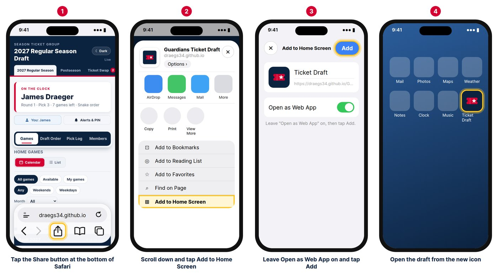

Ticket Draft
Getting started
Our season tickets are split up through an online draft: members take turns choosing games until everyone has their share. There's nothing to download and no account to create. You just need the site and the PIN the commissioner gave you. It works on a phone, tablet or computer.
Before the first draft
- Open the site and bookmark it.
- Open the menu and tell the site who you are.
- iPhone users who want push alerts: add the site to your Home Screen.
- Set up notifications and tap Send me a test.
- Optional: change your PIN to one you'll remember.
Finding your way around
Tap the ☰ menu button at the top left to open the menu:
- Drafts: Regular Season (where you'll spend most of your time), Postseason (shown only when there's a playoff draft) and Ticket Swap (for trading games after the draft). A red dot on the menu button means you have new swap offers.
- You: your name, Notification & PIN settings and Dark mode.
- Help: this page.
- Commissioner: Setup and tools for the commissioner only.
On the draft page, the large card shows who is on the clock (whose turn it is), the round and pick, and how many games are left. Live at the top right means the page updates by itself, so you never need to refresh.
Tell the site who you are
Do this first. The site will then highlight your games and turns, fill in your name, and skip asking for it elsewhere during that visit.
- Open the menu and tap Who are you? under You.
- Choose your name from the list.
- Enter your PIN and tap Continue.
The menu now shows your name. Tap it any time to switch to someone else, or choose Not me.
What changes once the site knows you
- Your games show in green in the calendar and list.
- Your turns are highlighted in blue in the Draft Order and Pick Log.
- The My games filter shows just your games.
Save the site to your Home Screen
This puts a ticket icon with your apps so the draft opens with one tap. It's optional: you can always just use the link.
iPhone and iPad (Safari)

- Open the site in Safari and tap the Share button (a square with an arrow pointing up). If the toolbar is hidden, scroll up a little.
- Scroll down and tap Add to Home Screen.
- Leave Open as Web App on, keep the name Ticket Draft, and tap Add.
- From now on, open the draft from the new Ticket Draft icon, especially when setting up push notifications.
Android (Chrome)
- Tap the three-dot menu at the top right, then Add to Home screen (or Install app).
- Push notifications work in Chrome on Android even without this step.
Computer
Just bookmark the site. Chrome and Edge can also install it as an app, but it isn't needed.
Set up notifications
The site can tell you when it's your turn, so you don't have to keep checking. Open the menu and tap Notification & PIN settings (it's also a button on the Ticket Swap page). A green check mark next to it means at least one kind of alert is on.
How to reach you
- Push notifications pop up like an app alert, even when the site is closed. Tap Turn on for this device and choose Allow. Do this on each phone or computer you want alerts on. (iPhone: only from the Home Screen icon.)
- Email is usually filled in already. You can add a second address, such as a spouse or work email.
- Phone (optional) is only shared in Ticket Swap with the person you trade with. Text message notifications are not available.
Drafts: when it's my turn
Choose any combination of push, email and on-screen alerts in this browser (a banner and flashing tab while the site is open). Tick Also send a push or email when I'm up next for a heads-up one pick before your turn.
Ticket Swap
Email me when someone posts a listing sends an email whenever a member posts games to trade. Untick it if you don't want these.
Save and test
Tap Save. Send me a test (5 sec) sends a sample alert about 5 seconds later. On a phone, lock the screen right after tapping it, because phones often hide banners for the app you're looking at.
| Alert | When |
|---|---|
| On the clock | It becomes your turn. Emails list the next 5 picks with yours highlighted. |
| Up next | You're next after the current pick (if you ticked the heads-up). |
| Reminder | You haven't picked yet and the commissioner turned reminders on. Never sent 11 PM–8 AM ET. |
Your PIN
Each member has a private PIN from the commissioner. It confirms it's really you when you pick, change settings or use Ticket Swap.
- Open Notification & PIN settings and tap Change my PIN at the bottom.
- Enter your current PIN, then your new PIN (4 to 8 digits) twice.
- Tap Save new PIN. Your old PIN stops working right away.
Forgot it? Ask the commissioner to reset it.
Browse the games
On a phone, the bar at the top of the draft switches between Games, Draft Order, Pick Log and Members. On a computer they're all on one screen.
Calendar or List
Games open in the Calendar. Use the Calendar / List switch to change views; the site remembers your choice. In the List, months start folded: tap a month bar to open it, or use Expand all. A month turns gray when none of its games are left.
Filters
- All games / Available / My games: everything, only open games, or only yours.
- Opponent: just the games against one team.
What the colors mean
| Color | Meaning |
|---|---|
| Navy | Open and can be picked now (a Pick button in the list). |
| Light blue | "Available": open, but the draft isn't taking picks right now. |
| Gray | Taken, with the member's name. |
| Green | Your game. |
A small star on the calendar marks the Home Opener and holidays.
Make your pick
Picks go in snake order: the order reverses each round, so whoever picks last in one round picks first in the next. Up Next shows who's picking now (in red) and who's coming up.
- When it's your turn, find the game you want in the Calendar or List.
- Tap its navy Pick button (in the calendar, tap the navy day).
- Check the game shown in Confirm your pick.
- Enter your PIN (filled in if you used Who are you? this visit) and tap Lock it in.
Good to know
- You can only pick on your turn.
- If there's a time limit and it runs out, your turn may be skipped. Keep alerts on.
- Pick Log lists every pick, newest first. Members shows how many games each person has and has left.
- Can't pick (out of town, no signal)? The commissioner can pick for you.
Dropping out
If you don't want any more games, tap the red Drop out of the draft button (on a phone it's on the Draft Order tab and at the bottom of Games). Choose your name, enter your PIN and confirm. You'll be skipped for the rest of the draft. Contact the commissioner if you change your mind.
Ticket Swap
How Ticket Swap works
Can't make one of your games? Open the menu and tap Ticket Swap. Post the games you want to trade away, other members send offers, and you accept the one you like.
- Your listings are at the top, highlighted in light blue.
- Other members' listings are below, each with a Make an offer button.
- A red number next to Ticket Swap in the menu (and a red dot on the menu button) means you have new offers.
Only regular season games you hold that haven't been played can be traded: all 4 tickets, or 2 of them. Played games drop off listings automatically.
Post a listing
- On the Ticket Swap page, tap Post a listing (choose your name and PIN if asked).
- Games to trade away: tick one or more of your games, or Select all.
- Tickets: 4 or 2. With 4, tick Open to trading just 2 of the 4 if you'd split them.
- Looking for: Any game, or Specific games and tick the ones you want.
- Tell me about offers by: push and/or email.
- Tap Post listing. Members who get listing emails are told about it.
To change it later, tap Edit on your listing: update it and Save changes, Mark fulfilled if you traded some other way, or Remove listing.
Make an offer
- Find the listing and tap Make an offer.
- Tick the game(s) you want from that listing, and choose 4 tickets (or 2 if they'll split).
- What you'd trade: tick the game(s) you'll give. If they asked for specific games, only those you hold are listed. Choose Other (see note) to offer something else.
- Add a note (required with Other), choose how to hear back, and tap Send offer.
Offers are private: only that member and the commissioner can see them.
Accept or reject an offer
- On your listing, tap Offers.
- Each offer shows who it's from, what they want and what they're offering. Use Email or Text to ask a question first.
- Tap Accept or Reject, then confirm.
- Accepting tells the other member right away, with your contact details. The accepted games leave your listing, and other offers for the same games are rejected automatically.
- Rejecting tells the member, and your listing stays open.
After the trade
- Contact each other using the email or phone in the acceptance message.
- Hand over the tickets the way our group normally does.
- Let the commissioner know if anything needs to change in the official records.
More
Questions
| No push notifications on my iPhone. | Open the site from the Home Screen icon (not Safari) when you tap Turn on for this device, and tap Allow. Check Settings › Notifications › Ticket Draft, then send a test and lock your phone. |
| I tapped "Don't Allow". | iPhone: Settings › Notifications › Ticket Draft › Allow Notifications. Android or computer: allow notifications in the browser's site settings, then turn push on again. |
| I'm not getting emails. | Check spam or junk and add the sender to your contacts. Confirm your address in Notification & PIN settings and tick Email. |
| I forgot my PIN. | Ask the commissioner to reset it, then change it yourself. |
| The site shows the wrong person. | Open the menu, tap the name under You, and choose yours or tap Not me. |
| I have a new phone. | Add the site to its Home Screen and turn on push there. Email settings carry over. |
| Why can't I tick a game to trade? | Only your upcoming regular season games can be traded. |
| Can I take back a swap offer? | Not on the site. Let the member (or the commissioner) know. |
| Does this cost anything? | No. It's a private web page for our group, with nothing to install or pay for. |
For anything else, including pick mistakes or how many games you get, contact the commissioner.